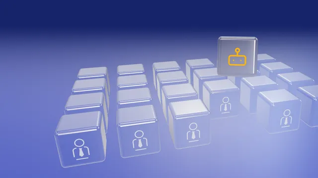

Selección de perfiles técnicos
Selección de ingenieros/as y técnicos/as de automatización y robótica
En Sibberia seleccionamos ingenieros/as y técnicos/as de automatización y robótica para empresas industriales y técnicas. Diseñamos cada proceso a la medida del puesto y del equipo, y trabajamos a éxito.
Perfiles que seleccionamos
- Ingeniero/a de automatización
- Técnico/a de automatización
- Ingeniero/a de robótica
- Técnico/a de robótica
Cómo trabajamos
Compartir
Escuchamos tu necesidad y conocemos tu empresa, tu equipo y su cultura.
Crear
Diseñamos un proceso a medida, con objetivos y plazos acordados contigo.
Crecer
Te acompañamos hasta que la incorporación se consolida.
- años de experiencia
- +15
- consultores especializados
- +20
- proyectos a medida
- 100%
Otros perfiles técnicos
-
Mantenimiento y SAT
Técnico/a de mantenimiento eléctrico, Técnico/a de mantenimiento mecánico, Técnico/a de mantenimiento electromecánico, Técnico/a de SAT (servicio de asistencia técnica)
Ver perfiles -
Producción
Operario/a especialista, Jefe/a de turno
Ver perfiles -
Calidad, PRL y Medioambiente
Técnico/a de calidad, Técnico/a de prevención de riesgos laborales (PRL), Técnico/a de medioambiente
Ver perfiles -
Almacén, Logística, Planificación y Compras
Personal de almacén, Técnico/a de logística, Planificador/a, Técnico/a de compras
Ver perfiles -
Ingeniería y Proyectos
Proyectista, Técnico/a de site, Técnico/a de proyectos
Ver perfiles -
Programadores/as
Programador/a
Ver perfiles
¿Buscas este perfil?
Cuéntanos qué necesitas y te respondemos.